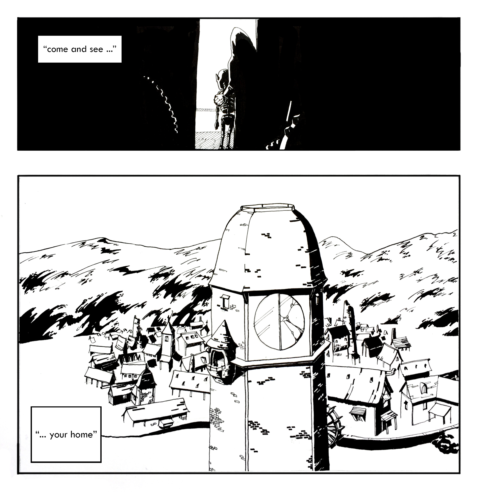

The tired old Tinkerer held his creation up to the light and sighed. It was the sound of something falling in to place that previously, frustratingly had absolutely refused to do so. A few golden beams came from high in the workshop somewhere and penetrated the darkness, illuminating the chaos of a space made for creating. The most notable aspect of the space was the number and variety of mechanical parts scattered across every nook and cranny of the workshop. Over here were boxes of gears in all different sizes. Over there, on a wooden workbench, mounded high like a desert sand dune, were thousands of tiny golden wings. The stone walls were dotted with dim lamps that exuded a warm bronze light that didn’t do much by way of illumination but made the place feel less like a cave and more like a room. The lamps were spaced evenly, interrupted only by two oak doors that sat facing each other across the workshop. Strewn across the floor were various cranks and levers, axels and wheels and, framed by a box of golden light, a shadow. Shaped like a boy. Moving.
“Aha!” The cry echoed through the workshop, quiet but for the soft click and whir of moving gears. “Now, let’s see,” muttered the Tinkerer who had knelt on the hard stone floor and placed his creation, the source of the afore mentioned shadow, on the ground in front of him. He reached forward and inserted a key in the area where a neck would be on this small automaton. The tinkerer gave three good twists, removed the key, and gave the machine a sharp tap on the top of the head. The Tinkerer stood up and watched as his creation began to move about the workshop. While movement is a functional description of the activity in which the small automaton was now engaged, perhaps a more accurate phrase would be toddling. It was an odd sight, almost eerie, startlingly human. Even more alarming perhaps was the look of fatherly pride in the Tinkerer’s eyes. It didn’t seem possible but, whenever the automaton would come close to a pile of wheels or the leg of a table, it turned around and walked away. It acted as if it could see, which of course, was preposterous.
After a few minutes of this the Tinkerer cleared his throat and, in the quietness of this small, dark workshop, the automaton stopped to listen. It stared like a curious child at the source of the noise and after a few moments tilted its head.
“Do you know who I am?” came the deep, slightly husky voice of the Tinkerer. It sounded like aged whiskey. The automaton took a few steps toward the voice and then stopped and issued what sounded like the soft tinkle of small bells brushed by a faint breeze. While not words, the notes sounded like a question and the Tinkerer laughed.
“Do you know who you are?” questioned the Tinkerer. This time the notes sounded sad, and the rigid metal of the automaton seemed to soften and droop slightly.
“I wonder,” said the Tinkerer stroking his long, white beard absentmindedly. With a swiftness that belied his age, he turned and strode over to a workbench covered in parchment on which were intricate designs. He picked a couple up and glanced over them, his brow furrowed in concentration. Then, in another burst of movement, he crossed over to a small oak door and wrenched it open, a cascade of light flooding the darkness. He turned to the small automaton and said, “Come along now.” It crept toward the door, cautious. A puff of wind came through the open door ruffling the robes of the Tinkerer and scattering some loose parchments.
